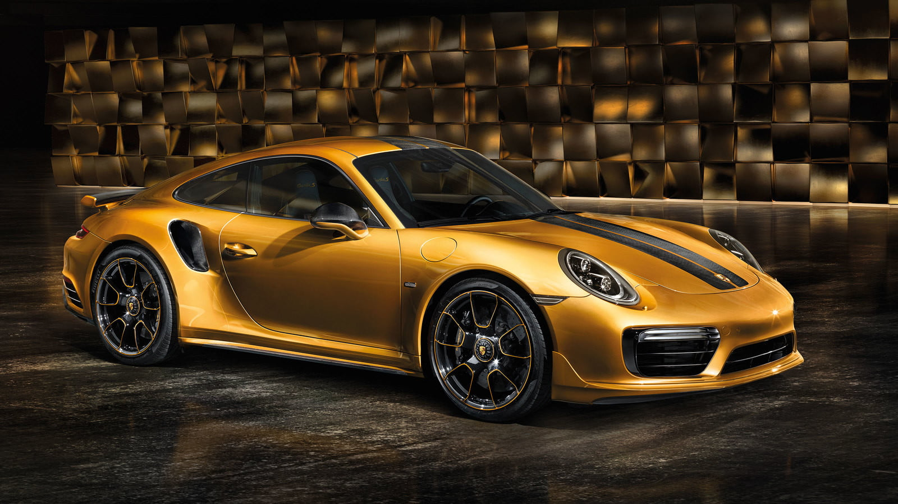

1 / 3

HISTORY
2 / 3

MODELS
3 / 3

TECHNOLOGY
Dr. Ing. h.c. F. Porsche AG, usually shortened to Porsche AG (German pronunciation: [ˈpɔʁʃə] (About this sound listen)), is a German automobile manufacturer specializing in high-performance sports cars, SUVs and sedans. Porsche AG is headquartered in Stuttgart, and is owned by Volkswagen AG, which is itself majority-owned by Porsche Automobil Holding SE. Porsche's current lineup includes the 718 Boxster/Cayman, 911, 918 Panamera, Macan and Cayenne.
During World War II, Volkswagen production turned to the military version of the Volkswagen Beetle, the Kübelwagen, 52,000 produced, and Schwimmwagen,[6] 15,584 produced. Porsche produced several designs for heavy tanks during the war, losing out to Henschel Son in both contracts that ultimately led to the Tiger I and the Tiger II. However, not all this work was wasted, as the chassis Porsche designed for the Tiger I was used as the base for the Elefant tank destroyer. Porsche also developed the Maus super-heavy tank in the closing stages of the war, producing two prototypes.
At the end of World War II in 1945, the Volkswagen factory at KdF-Stadt fell to the British. Ferdinand lost his position as Chairman of the Board of Management of Volkswagen, and Ivan Hirst, a British Army Major, was put in charge of the factory. (In Wolfsburg, the Volkswagen company magazine dubbed him "The British Major who saved Volkswagen".) On 15 December of that year, Ferdinand was arrested for war crimes, but not tried. During his 20-month imprisonment, Ferdinand Porsche's son, Ferry Porsche, decided to build his own car, because he could not find an existing one that he wanted to buy. He also had to steer the company through some of its most difficult days until his father's release in August 1947. The first models of what was to become the 356 were built in a small sawmill in Gmünd, Austria. The prototype car was shown to German auto dealers, and when pre-orders reached a set threshold, production (with aluminium body) was begun by Porsche Konstruktionen GesmbH founded by Ferry and Louise. Many regard the 356 as the first Porsche simply because it was the first model sold by the fledgling company. After the production of 356 was taken over by the father's Dr. Ing. h.c. F. Porsche GmbH in Stuttgart in 1950, Porsche commissioned a Zuffenhausen-based company, Reutter Karosserie, which had previously collaborated with the firm on Volkswagen Beetle prototypes, to produce the 356's steel body. In 1952, Porsche constructed an assembly plant (Werk 2) across the street from Reutter Karosserie; the main road in front of Werk 1, the oldest Porsche building, is now known as Porschestrasse. The 356 was road certified in 1948.Click This!!!